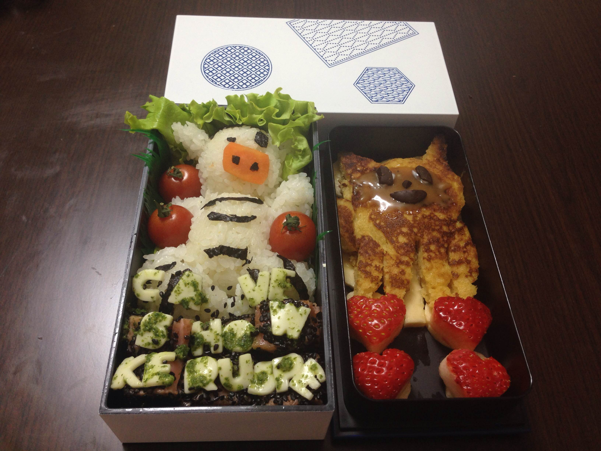

Exherbo and Japanese food
by Marc-Antoine Perennou on March 3, 2014
Blogging about my personal life is not one of my habits, but tonight is the exception, because it’s worth it.
Context
Since September, 2013, I’m living in Japan, near Nagoya.
In Japan, there’s a traditional kind of meal called bento.
A bento is basically a meal better served cold, often brought as a picnic or quick lunch, carried in a special box.
Japanese people really like so-called “cute” things and tend to make their bentos as artistic as possible, like some kinds of paintings.
Exherbo + bento = ?
Tonight, my girlfriend made me the surprise of cooking me the geekest bento ever.
Exherbo’s mascot: Zebrapig as a plate, github’s mascot: octocat as a desert.
Pure Japanese awesomeness.

cave show keruspe (the command line written under zebrapig outputs this, on my machine:
* repository/keruspe
::repository 0 {no slot}
::unavailable (0)A {no slot}
::unavailable-unofficial (0)A* {no slot}
repository/keruspe-0::repository
repository/keruspe-0::unavailable-unofficial
Repository description Keruspe's dev repository
Repository format e
Repository homepage http://www.exherbo.org
Repository sync git://git.exherbo.org/dev/keruspe.git
Masked
already configured This repository is already configured